← 返回阅读库 · 原论文目录
论文讲解阅读文档 · 内容生成 · v010
Visual Autoregressive Modeling: Scalable Image Generation via Next-Scale Prediction
视频时长 00:28:11；讲解文字 12,826 字符；提取讲解画面 32 张。按视频原顺序阅读，每段文字保留时间戳。
文字来自整段视频的自动语音转写，按自然停顿分段，并与 PPT / 论文页面 / 演示画面对齐。未将讲解压缩为摘要；术语、数字和口述公式请结合画面及原论文核对。 阅读稿已校正规范部分明确术语误识别；原始逐字稿和每处修改记录另行保留。
讲解画面为源视频截图（640×360），不是可编辑 PPT 文件。全片按每秒 2 帧扫描内容变化，逐步展开页保留；连续动画保留代表画面。清晰度受源视频限制。
下载完整资料包 · 含离线 HTML、PDF、Word、全部 PPT 画面和字幕。
原论文与材料
Visual Autoregressive Modeling: Scalable Image Generation via Next-Scale Prediction · 下载完整 PDF（19 页）
按时间阅读
00:00:00–00:00:28 · 画面 001
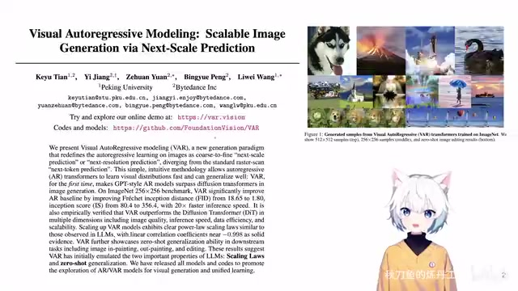
00:00:00–00:00:28 · 画面 001大家好,今天我们来快速说一篇论文 Visual Autoregressive ModelingSkillable Image Generation via Next Scale Prediction。这篇文章是第一次使用 Next Token Prediction 这样的技术路线在 ImageNet 的图像生成上打过了 Diffusion-based 的这些方法，比如说 DIT,Diffusion Transformer 这样的方法。而且相比之下它的推理速度非常的快，是一个很有意思的工作。这边你看到它提供了一些样例效果还是很不错的。
00:00:28–00:00:46 · 画面 002
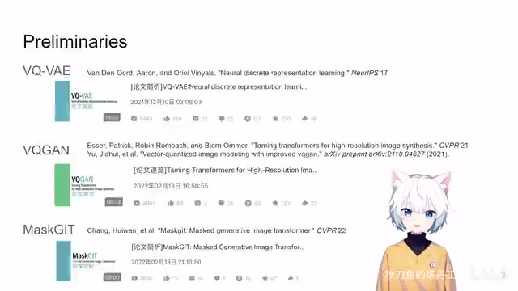
00:00:28–00:00:46 · 画面 002那么在我们看这篇文章之前,我希望你有大概的一个了解,就是对于 VQVAE,VQGAN,VASGIT,其实这个不是必须的,但是前面这两篇是相对比较重要的。好的,那么再往下我就假定你已经熟悉这两个工作了,我们就来看这篇文章的贡献。
00:00:46–00:02:01 · 画面 003
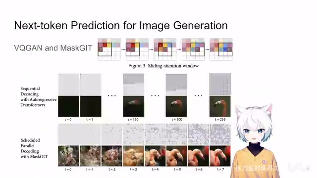
00:00:46–00:02:01 · 画面 003那么这篇文章呢，延续的就是这个 Next Token Prediction 做 Autoregressive Generation 的套路。那么之前呢，我们有 VQGAN，它生成图片是怎么来的呢？在这个 Latent Space 里面，我的一个像素这个 Latent Pixel 它其实就是一个 Token。那我生成的时候就是一行一行的生成。
然后换到下一行，一行一行的生成。同时这里我生成的时候不是这个 token 和之前所有的 token 都做 attention。你看到在 vq 干里面，它只和局部的这些空间位置上相邻的这些 token 它做 attention。这是一个经典的使用 next token prediction 做我们图像生成的套路。但是它的局限性很明显，你想要生成一整张这样的图像，你得一遍一遍的，你每生成一个 token 都得推理一遍。
做一次 Transformer 的推理对吧？你看这样子的生成是很耗时的。那么在这些文章的基础上，后面我们有 MaskGIT，一次去尝试生成多个 token。属于是牧羊人用雪白的羊群填满飞机场周围的黑暗。但是这些 Next Token Prediction Base 的方法，你可能用它来生成语言来讲，因为语言就是一个一维的序列，它可能是合理的。但是你如果把它直接拿过来生成图片可能其实有些问题，有些配置它并不是那么合理。具体来说就是，你想你在生成当前的 Token 的时候，它是 Condition 之前的所有的 Token。但是你一旦来到图片里，你想这个图片中的某一个位置一个 Patch。
00:02:01–00:02:56 · 画面 004
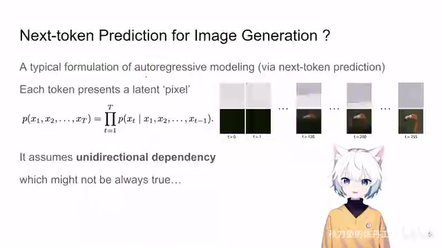
00:02:01–00:02:56 · 画面 004那你按照图片的性质来说，跟它相关的其实应该是它周围相邻的这些 patch。那这个性质呢，就导致了你当前这个 token 会和未来的这些 token 可能在生成顺序上相差比较远的这些 token 它们也要相关。但是你现在 autoregress 的方法就限制了你生成完这个一个 token 之后开弓没有回头箭。你在后面生成新的 token 的时候你就不再去修改前面的 token 了。那这样子你其实你这个 token 跟后面这些。
token 位置的 token 他们的相关性是没有办法体现的。你只能是后面后来的这些 token 去将就前面这些 token。那么为了克服这样的问题呢，本文就提出说啊，我不是做 next token predation 啊，我是做 next scale predation。那首先他做的一个事情就是，我生成一张图的时候，我不是一个 token 一个 token 的蹦出来了，也就是在 latent space 里面一个像素一个像素的蹦出来了，不是这样的，而是我一次直接把整个 latent space 给他输出出来。
00:02:56–00:04:56 · 画面 005
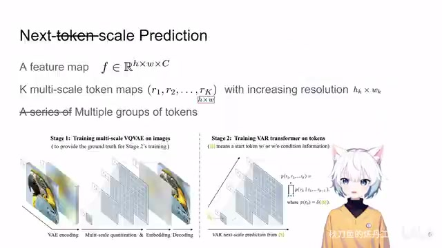
00:02:56–00:04:56 · 画面 005我一次生成这一串 token，这一串 token 它们可以相互做 attention，它们就代表了整个这个 latent space 一整张图片。但是呢，我们也不是一下子一步到位把这种高像素的这个一整张 latent space 都生成出来，它是一个渐进的过程，也就是 multi-scale 的过程。为什么叫 next scale prediction 就是呢，它把这个 latent space 也就是这个 feature map分成不同的 Skill。在最小的 Skill 也是最一开始的 Skill，它的空间的分辨率是非常低的。比如说，就是一个 1x1，就是一个像素，就是一个点。我先做出这样一个 Token 来，然后通过插值把这一个 1x1 的 Latent 变成一个 2x2 的 Latent。然后再基于这个 1x1 的 Token 去生成
二乘二的这些 token。那你想二乘二，你就有四个 token 要生成了。也就是说，你在这一趟 transformer 这个 follow path 里面，你要生成四个新的 token。那生成完了之后，现在你有五个 token 了。那你先分别它们，分别是第一个尺度的一乘一的这个尺度的这里。然后呢，第二个尺度二乘二它有四个 token。那五个 token，那你再生成下一个尺度假如说下一个尺度是一个 3 乘 3 的，那么下一次你在生成的时候，你要直接生成 9 个 token。你就这样子不断的做，不断的做。最终最后一次生成的时候，你就生成 h 乘 w，就是你想要的 fisher map，想要的 latent 它的像素的这些 token。你做一趟把这些 token 都做出来，这个就是本文的核心的思路。你看到它不是 next token relation，它不是一个 pixel 一个 pixel 的往外蹦，而是说
说我一次蹦一组，一次蹦一组。每一组 token 的数量逐渐增大。反映到你的 latent space，就是它也不再不断的变大，最终变到你想要的图的大小。这个是本文设计的核心的思想。相对于你在单格尺度上做 next token predation，它的优点是显而易见的。首先做了经过计算发现，这比你直接的去在一个层次上做 next token predation 相比，你要做的计算量
00:04:56–00:05:05 · 画面 006
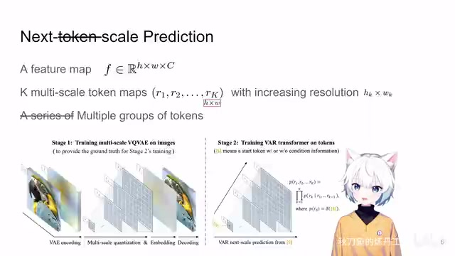
00:04:56–00:05:05 · 画面 00600:05:05–00:07:05 · 画面 007
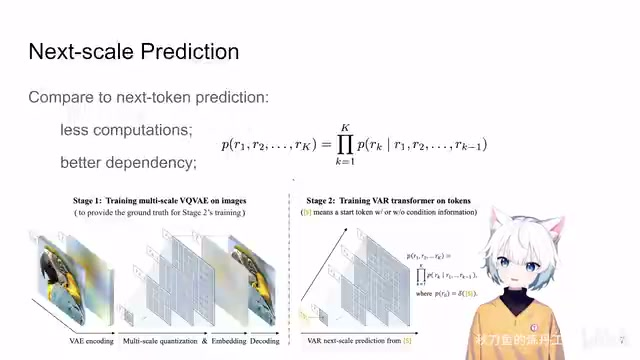
00:05:05–00:07:05 · 画面 007是少的。这个时候有朋友说了，这可能有点违反直觉。你说你 multi scale 要生成的 token 的总数肯定比单个 scale 要生成 token 的总数要多。但是这里有一个重要的点，就是你在做 autoregressive 这样一个生成的时候，它的 crossattention 它的代价是不断的增加的。你的 forward pass 你一个像素就要过一个 forward pass。但是在本文的 multi scale 的设计中，你一次是生成一个 scale 的 token
一个 skill，你可以一次加很多的 token 进去。这样子就减少了你 forward 的次数。所以综合考虑下来，这样的方法是有更少的计算代价。同时它的 dependency 变得更加合理了。你生成下一个 skill 是基于上一个 skill，就相当于你原来是从一个看不太清只知道大概轮廓的状态，逐渐逐渐向里面添加细节。同时呢，对于你的每一个 skill 来说，你的这个各个 token 之间他们是可以相互影响的啊。这就不存在了你前面一个 token 决定了后面一个 token
就只能跟着前面跑这样的情况了。大家都可以相互商量着来。你这样构造这个问题，它的原理上就更符合 next token prediction 这样的任务。它就更符合你的数学的定义了。当然我这里还是要说，你虽然看这里它这是 R1R2 对吧到 Rk-1，可能是你按照原来的逻辑它可能是一个一个的 token，但它其实不是。你的每个 R 代表的是一组 token是你在当前的这个 scale 所有的 token，它一次生成也是一组。这个是我觉得它的 presentation 可以再改善的地方，就是你要清楚的让读者明白这是生成了一组的 token。我们要反复的强调这个事情。这个就是本文核心的 next scale prediction 它的东西。好，那么现在我们既然已经定调了说，我们要拿到一个 latent 之后，我要产生一个多个尺度的这样的 token，形成一个图像金字塔这样的一个东西
00:07:05–00:07:40 · 画面 008
00:07:05–00:07:40 · 画面 008那理论上来讲，你只需要拿金字塔最底层这层它的像素就是你 latent space 的大小嘛对吧。你只需要保留最后一层用它去做编码去做图像就好了对不对。但是这就意味着你前面的这些更高的层这些 R1 到 RK-1 这些层它就浪费掉了。那有这些 token我们反正都要生成它，为什么我们不把它也拿来好好利用一番呢？下面呢，我们就来看作者的这个设计，他更改了 VQVAE 的设计，让我们把这个金字塔里面的所有的 token 都用得上。我们看来，我们来看他具体是怎么做的。那这个时候他的思路呢，就跟这个 RQTransformer 是非常像的。
00:07:40–00:08:34 · 画面 009
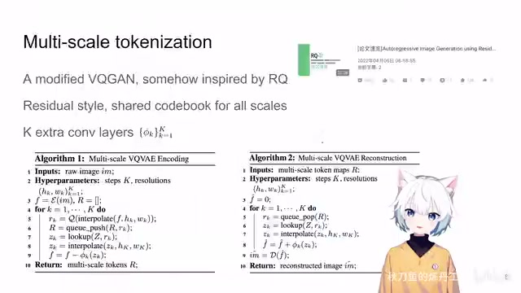
00:07:40–00:08:34 · 画面 009RQ 呢，就是我用多个离散的 token。我先拿第一个离散的 token 出来。尝试去估计一下这个当前连续的这个值。我估计肯定不一定准确嘛。那么我剩下一个残差。那不要紧我再拿第二个离散的 token 出来。去估计这个残差那这个时候这个残差再减小一点。那还有残差我再拿第三个 token 来这个呢，是 RQ 的核心的思想。
但是呢 RQ 的实现它就给你变成很多层。分辨率还是不变那在本文呢作者是使用了 multi-scale tokenization它的最核心的一个点。虽然你也是用多个离散的 token。去表示一个连续的 token。但是随着你的这个 skill 的变化。你有越来越多的 token是共用一些连续的 token。我们来结合它的算法来看。
00:08:34–00:10:34 · 画面 010
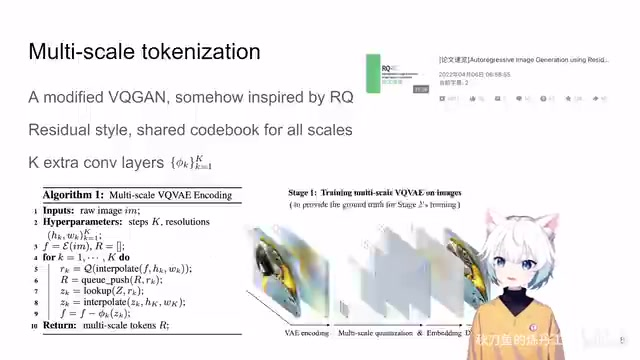
00:08:34–00:10:34 · 画面 010我们首先既然是 vqvae首先前面要有一个 encoder。我们就直接拿到我们的 latent space。就是这个 f现在我们尝试去编码它。首先来到第一个 skill它的分辨率是最小的。比如说就是 1 乘 1 一个 token。这个时候我就把我的当前的。要编码的东西这个 F 给它缩放缩放到 1 乘 1 的大小就是一个 token一个 token 你去做量化查出它在字典里面的坐标。
然后记录一下字典的坐标。把它的对应的 embedding 找出来。这一个 embedding 是给整张图用的。对吧你再把它插值插回到整张图的大小。这个时候你去做残插。那么在下一个 scale 我们就要估计。剩下的这个残差。那么在下一个 scale，那这个时候呢，这个 scale 的 resolution 要增加一点，比如说是一个 2x2，这里我们有四个 token 去做这个事情。那你上一个 scale 剩下的这个残差这个 f，同样的给它缩，那这次呢你是缩成一个 2x2 这样的一个大小。
然后你去扔到你的 quantization 里面去查，这个时候你得查出 4 个 token 出来，把这 4 个 token 送到你的堆列里面，4 个 token 对应的连续的 embedding 是多少拿出来，再把 2 乘 2 的值插值回到原来的原始图像的大小，你残差去减去你这一次的估计的值，就剩下下一个残差了，然后你再去做更精细的第三个 scale，你的 resolution。
再大一点，然后去估计残差，这样子就一遍一遍循环，最终你最后一个 resolution 就是跟原始图像一样大了，你也就不要插值了，这些插值都省略了，你就最后做一遍就好了。这样子你拿到这一系列的一串 token，这叫 multi-scale tokens。这个就是本文核心的 multi-scale 编码的过程。那么当然还有一些设计师直接沿用 RQ，比如说虽然你是做残差的估计，但是你这些所有的 token 都是共用一个码表的。这样子能够提高码表的使用效率吗？同时这里引入了 k 个 convolution layers，就是这个东西来改善你直接插值的结果。这个就是你怎么样把一个图像的 latent 变成 multi-scale 的。
00:10:34–00:10:53 · 画面 011
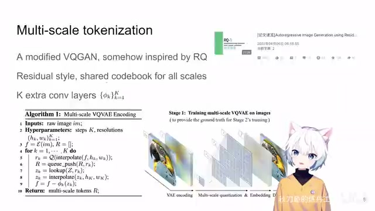
00:10:34–00:10:53 · 画面 011这么一个过程。那么我们再直接一点拿到它的代码来看，我们就看 VQ 这一部分的代码，Multi-Scale VQ 这个部分。你前面有 Encoder 把这个 Latent 提出来，这个东西叫做 FBCHW。为什么叫 BCHW 对吧？Batch Channel Hat and Weights。然后你需要一个没有 T 度传递的版本，它就是你最开始的这个残差，你要不断的去估计它。然后呢，初始化一个 0F Hat，这个就是你估计的结果你。
00:10:53–00:12:53 · 画面 012
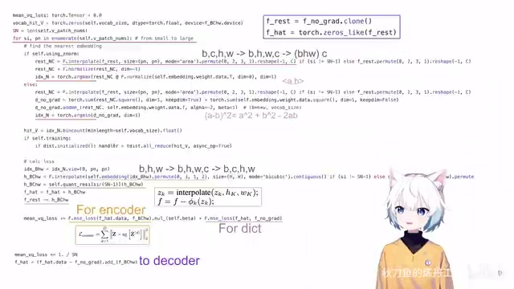
00:10:53–00:12:53 · 画面 012最终估计出来的 f hat 是一个叠高高的过程，从第一个 scale 加上第二个 scale，这样不断的加起来来逼近 f。然后我们就开始从最小的分辨率开始，也就是最低的 scale 开始。这里就是 vq 就找你的词典里面跟你当前的 embedding 最相近的一个值。最原始的就是算 mse ，谁的 mse 小。就选谁。那现在呢有这个 ZNOM，就是先把所有的这个 embedding 都做 L2 normalization，然后看谁的 cos similarity 也就是内积谁更大一点。那一开始进来先把你的 latent 缩到我们这个 scale 它的分辨率上，BCHW 进来先换一个顺序，把这个 channel 放到最后，然后把前面这些东西都拿起来。
这样子呢你就从一个图像的二维的这个 embedding 变成了一个一维的长的序列。然后呢你就找到了词典里面和这个 embedding 最相近的这个 embedding 它的坐标。那注意这个时候它的形状还是长这样对吧？你要真正想把它恢复成一张图像，你还得把这个形状再变回来。那你查表对吧，bhw 查出来就是 bhwc，那跟之前逆着来把顺序返回来 bzhw，然后呢你再做 interpolation。
把当前 skill 的 resolution 给它插值到原始的 latent 的它的 resolution，直接这样插值一下。插值完了再用对应的这个 convolution layer 就是它来修一下 artifacts。那这个就是你在当前这个 skill 对它的这个残差的估计，把估计出来的残差堆到你的 fhat 上，fhat 就是你最终的对这个 f 一开始这个值的估计嘛。然后把你现在的残差减去你估计出来这个残差是残差的残差。
00:12:53–00:14:12 · 画面 013
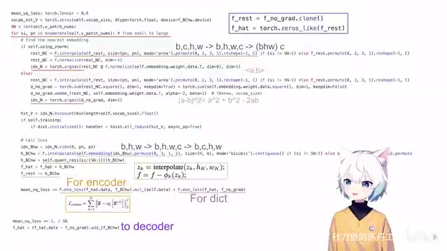
00:12:53–00:14:12 · 画面 013然后交给下个 scale 去估计就好了对吧？这是 multi-scale 的部分。那当然在每个 scale 里面你要训练的时候，真正训练的时候你要算 loss。那这个 loss 呢也是一个标准的 beta vq，你看到 beta 就是一个超参数嘛。那这个时候这里你去的是 fhat.data，它是没有梯度的，它就是你的那个码表那个词典里面的这个连续的 vector。
对吧但是你不想更新它你是希望你 encoder 出来的这个东西 encoder 直接给你的这个东西向它靠拢对吧那这个 loss 就纯纯的训练 encoder 的这是一个那同时呢你又不想这个词典里面的东西一成不变你还是希望你的这个词典里面的值向你的 encoder 的输出也来靠拢的是一个双向奔赴对吧所以呢这个这里也有一个 loss 那在你所有 scale 都计算完之后你别忘了你 VQ 之后还有一个 Decoder 这个 Decoder 要怎么训练就是你重建后的图像 Decode 出来的图像跟原始图像比较比如说是一个 MSE 这里作者还是用了梯度直通你在用重建的 MSE 去训练 Decoder 的时候同时也能够更新 Encoder 参数
00:14:12–00:14:46 · 画面 014
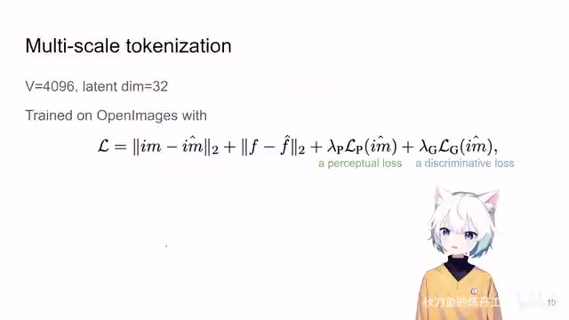
00:14:12–00:14:46 · 画面 014当然你在实际训练 VQ 的时候你不是单纯的只用 VQVAE 了我们后面有 VQGAN 这么多好用的东西我们为什么不用呢对吧这里也就是在第一阶段我们只训练一个 VQVAE 的时候这里作者用的是 VQGAN 然后在 open image 数据集上词典取了 4096 你看到图像重建的 loss 然后双向奔赴后面还有一个 perceptual loss 还有 discriminator 给你的 loss 这些都是很标准的设计了拿着这样的 Loss 你就能够训练出一个好的 VQVAE 来这个就是第一阶段的训练那么在下一个阶段我们只需要用一个 Transformer 把这一个个 Token 生成出来就好了这里作者使用的是 GPT-2 只不过把 Layer Normalization 换成了 Adaptive Layer Normalization 这样子它可以把我们每个 Class 的这种 Condition 增加到我们的生成的过程中这个是作者的设计但是使用 Transformer 的方法它是既区别于 Auto Regressive
00:14:46–00:15:12 · 画面 015
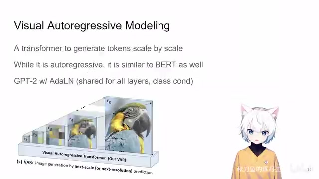
00:14:46–00:15:12 · 画面 015又是区别于 Bird 怎么来理解这个问题我们来看到这里
00:15:12–00:17:12 · 画面 016
00:15:12–00:17:12 · 画面 016那在一开始呢我们作者的生成是从一个 token 开始的这个 token 是跟你想要生成的图像的类是相关的你就把它作为一个一开始一个 condition 然后呢我们加上这个 position encoding 过我们的网络这一个 token 还是一个 token 这个时候呢我们认为这一个生成的 token 预测出来的 token 就是我们最高尺度上就是分辨率最小的那个尺度上它的代表的那一个 token 然后我们要做的呢就是把这一个image token 给它还原到你要生成的图像的大小做一个 interpolation 然后经过一个 conditional layer
这个 convolution layer 来消除它这个放大过程中产生的 artifacts 然后呢把这一层次所预测出来的值啊因为我们之前说了 vq 它训练出来的它是一个残差吗每一个 token 它都代表一个残差啊这个时候呢我们把它积累到原来一直在积累上那你假如说你这是第一个层次呢我们原开始原来的积累就是零啊我们就从零开始把第一个层次的这个预测的残差加上那加上之后这个 f hat 就是我们截止到当前这个层次我们预测的所有残差的累积它的尺寸呢是我们将要生成图像的大小那这个时候呢我们要做下一个尺度的预测那下一个尺度呢在这里假如说是一个二乘二一共有四个 token 那这个时候呢我们就把我们至今以来积累的所有的预测的结果的那个核给它重新缩放到这个二乘二的尺寸
缩放然后呢它就变成了四个 token 同样的我们再去加 positional encoding 再经过我们的网络这个时候我们网络处理的是四个 token 虽然它没有明显的把之前上一个尺度的一个 token 加在里面但是你从意义上来讲对吧我这四个 token 里面的结果实际上是均匀的包含了上一个预测中产生的这个结果的所以它是 auto regressive 但是它又不是那种传统 language model 的那样子的这种 next token prediction 这样的形式
这是一个很关键的点那么然后我们再去做预测相当于我们在这个尺度四个 token它这个残差我们就预测出来了
00:17:12–00:17:46 · 画面 017
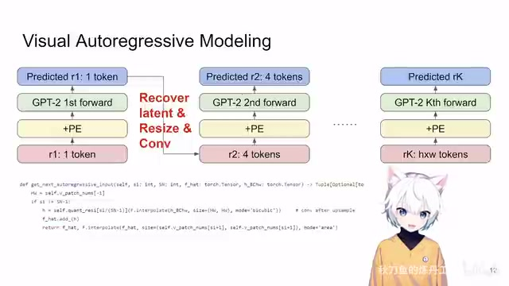
00:17:12–00:17:46 · 画面 017那同样的再到下一个尺度的时候我们要把这四个残差先缩放到整个原图的大小然后过 convolution加回到我们一直以来积累的这个值里面然后把这个积累的值再缩放到下一个尺寸的这个分辨率再重新的一遍一遍的做那么你可以想象到最后一个阶段我们这个 token 的数量就是我们原始图像的token 的总数经过一个 transformer 的预测得到的结果呢再加回到原始的图像就是我们最终生成的图像的结果那你现在听起来可能它有点抽象我们先来看它这个推理的代码比如说默认的情况下
00:17:46–00:19:46 · 画面 018
00:17:46–00:19:46 · 画面 018我们把 layton 分成十步来生成就是我要做十次 forward pass来把这个 layton 生成出来那每一个 scale它的 resolution 你可以看到从 1 到 2 乘 2 到 3 乘 3一直到 16 乘 16那最终 multi-scale它所有的 token 的数量你也可以计算出来对吧那你看到在这里我们要维护哪些东西呢首先这里有一个 linear layer就是你 VQ 里面词典每个 vector 的长度未必是你 transformer 里面每个 token 的长度
这里有一个 linear layer帮你做这个转换然后就是我们要加的各种 embedding 你注意看这里的颜色我们下一页会用使用相同的颜色来表示这些不同的 embedding 首先第一个就是 class embedding 我们做的是 ImageNet 1000 类我们应该有 1000 个不同的 embedding 它就作为一个 prompt 一样 guidance 一样的东西来告诉我们我们要生成什么类别的图像对吧注意这里还是加了一个 1 这个 1 是加给谁的哪怕他已经不在了对吧是加给那个不在的所谓不在是没有 condition
就是无条件生成这样一个东西你以为我在说什么我们为什么要维持这样一个东西是我们后面完全可以做 classifier guidancediffuser 里面的东西这么好用为什么不用呢对吧然后呢这个橙色的是我们要生成的第一个 token 的它的在生成之前的那个站位服它的 embedding 就是这已经三天三夜没合眼了一定要想给你们说点什么但是这个画得有个头的那个头它就是一个 learnable token 你第一个 skill 有多少 token 你就这里设置多大的这个 parameter 对吧那这个是这个东西那么再往下呢就是 positional embedding 作者根据它整个 sequence 的长度做了一个 absolute 这 positional encoding 同样的它也是 learnable 的对吧这是一个点那第二点呢作者仿照的是 jpt 的 segmentation embedding 就是我再维护一套 embedding 那用它呢来表示不同的 level 不同的 scale 啊也就是我在这个 scale 的时候这些一个 patch 它用一个 embedding 然后呢二乘二的时候这四个 patch
它用一个 embedding3 乘 3 的时候 9 个 patch 用一个 embedding 这个也不是什么新的技术了我们这个频道在之前介绍 Gato 的时候那篇文章的时候也说过这种东西这个就是它要维护的所有的 embedding 我们用不同颜色做了区分下面我们来看到他们在推理这个过程中是怎么使用的我们这里直接看它这个 die classifier fully guidance 首先最开始我们肯定要有 die condition 和不 die condition 这两种对吧你 batch size 直接乘以 2
00:19:46–00:20:05 · 画面 019
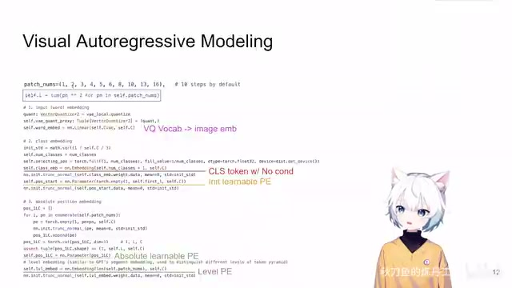
00:19:46–00:20:05 · 画面 01900:20:05–00:22:05 · 画面 020
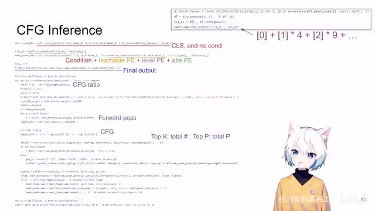
00:20:05–00:22:05 · 画面 020这里呢就把我们 classification embedding 还有那个代表没有类的这个 embedding 给他拿出来给他整理好然后我们再来看 positional encoding 这个东西它包含两个东西我们之前说了一个是你绝对的在 sequence 位置上的 encoding 这是 absolute positional encoding 然后还有就是你当前 patch 所在的 scale 所在 level 它对应的 encoding 这是一个部分这个颜色如果有朋友好奇这个东西是什么对吧它在这里
你可以看到对吧你第一个 scale 它的 index 是 0 它只有一个 token 那么你第二个 scale 它的 index 是 1 它这里有 4 个 token 它就是这样那它去查你的这个 level scalepositional encoding 它查出来的尺寸也跟你整个 sequence 的长度相吻合那在这个阶段呢你就已经把所有的 positional encoding 都已经做好了然后呢我们来看第一次交给我们的 transformer 它的这个序列是什么首先我们的 condition 对吧？我们之前构造的 condition 拿过来，然后我们说了画的一个头，第一个 learnable positional encoding 对吧？拿过来这些东西，再加上我们当前第一个 token 它的这些 positional encoding，把这些所有的东西都加起来，然后你送到 transformer 里面做推理就好了。当然这里你要初始化一堆地方来把我们每个 scale 估计的值给它堆起来，堆出来最终的结果就是我们最终估计出来的。
F hat 就是我们估计出来的那个值。有了这些，我们就开始一个 scale 一个 scale 的做对吧？从最低的一个 scale 开始，它的 resolution 最小的，它只有一个 token。先把这一个 scale 它的 CFG 的强度给它算好，你看到它这个强度是跟 scale 相关的，你随着你的 scale 越来越大，它的 CFG 的强度越来越大。
这个是给 Adaptive Layer Normalization 用的对吧？然后你就正经的做推理了，把所有层都过一遍，最后你 Transformer 对应位置的 Token 拿出来做 Classifier Free Guidance，然后做你的 CFG，最终拿到 Logis。然后你就开始采样，采样你当然也可以做 Top K Top PTop K 就是只在 K 个概率最高的 Token 里面选，Top P 就是把你的所有的 Token 按照它的概率排序，从最高的开始加。
00:22:05–00:23:00 · 画面 021
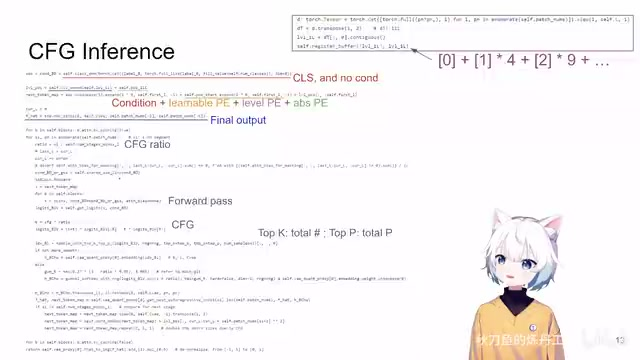
00:22:05–00:23:00 · 画面 021一直加加加，直到这个值到了这个 P 了。画一个分数线，前面这些 token 保留，后面这些 token 不要这样子。之后你剩下一堆 token 根据它们的概率做 softmax 再采样，你就最终拿到了你想要的 token。这里看你情况要不要加 smoothie。到这里你就完成了一次完整的 forward pass，你就把解码出来的 token 存好，我们下面还要用。那么然后我们就该处理下一个 skill，为了推理下一个 skill，我们要在当前的 sequence 基础上。
00:23:00–00:24:36 · 画面 022
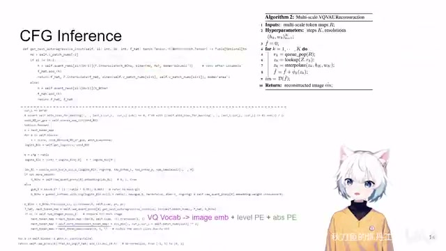
00:23:00–00:24:36 · 画面 022它是把我们在当前这个 level 预测出来的这个 latent 首先放大到原图的大小。记得过 convolution然后加到我们的 fhat 上。就相当于我们估计的结果正经了。加上了我们当前的 scale。然后再把估计的结果。给它 downsample 到下一个 level下一个 scale我们的尺寸这这样子就实现了把你一个短的 sequence当前的 scale 的一个 sequence给它续到一个长的 sequence。
这样的一个过程这个缩放是一个很精髓的过程。它不是直接的在原图的这个 sequence 后面。再加新的 token而是经过这样一套缩放的方法来做。那么拿到这个缩放过之后。新的这个长的 token 之后。我们记得再把 VQ 的这个 channel 的数量。变成 transformer channel 的数量但这里这个标记其实也不是特别准确。
我现在意识到它应该是 transformer 的 embedding对吧但是你明白这个意思。然后呢再加上我们之前算好的 positional encoding。一个新的序列就准备完成了。你再走回到之前的操作。再过一次 forward pass不断的一遍一遍的走下去。就好了。这个就是本文做 CFG 的时候生成推理的过程。你没有 CFG 它情况更简单。这里额外讲一句就是我这里放这个图只是在告诉你它怎么样把一串 multiscale 的 token 给它逐渐的 decode 到我们原始的 latent 上面，但是它并不能反映这个函数的过程，希望你不要混淆。好的，那么以上就是本文主要的技术的细节了。
到这里你就可以开始设计你的网络然后去训练就好了。那这里作者的设计非常直接，就是我所有的网络的宽度，attention head 的数量还有 dropout 的数值都是根据我的网络的深度来定的，公式就是这个样子。剩下的一些训练的参数包括参数量的估计对吧？都列在这里了。但是这样的网络它在训练的时候拿的是什么样的数据呢？
00:24:36–00:25:28 · 画面 023
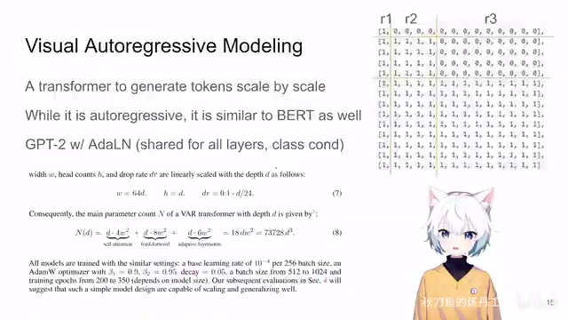
00:24:36–00:25:28 · 画面 023我们知道虽然在推理的时候在每一个不同的层次这个网络看到的 token 的数量是我们当前这个层次 token 的总数，但是在序列的时候它要看到所有层次的 token。假如说这里有三个层次，整个这个序列的长度就是这所有三个层次的 token 的总数加起来。那么为了保证后面的 token 不影响前面的 token 对吧？我们的 attention map 同一个尺度之间的可以做 attention map，当前的这个尺度不会跟下一个尺度做 attention。
那么当然我们在组织它的训练样本的时候也不是直接把 VQ 的结果拿过来就用的，我们知道这个网络的输入它是之前所有 token 经过这一串处理之后累加出来的那个结果 resize 到这个尺度，然后它的输出是我们这个尺度和下一个尺度之间的那个残差。所以哪怕你的训练的时候也是这样一个长的 sequence，但是这个 sequence 的输入和输出它也是需要经过处理的。
00:25:28–00:25:55 · 画面 024
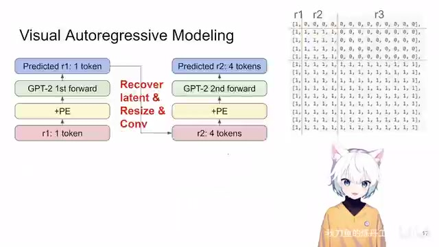
00:25:28–00:25:55 · 画面 02400:25:55–00:25:58 · 画面 025
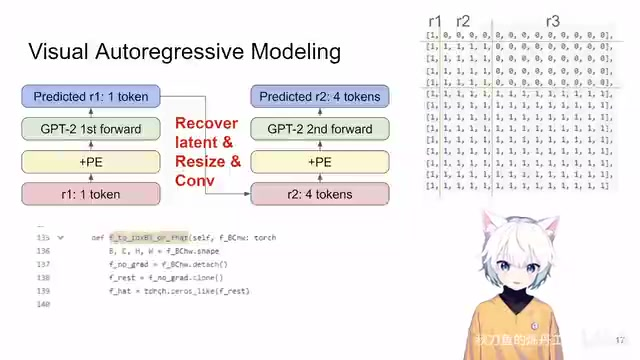
00:25:55–00:25:58 · 画面 025具体的操作你需要看它这个函数，然后我们直接来看到作者汇报的结果。
00:25:58–00:25:59 · 画面 026
00:25:58–00:25:59 · 画面 02600:25:59–00:26:28 · 画面 027
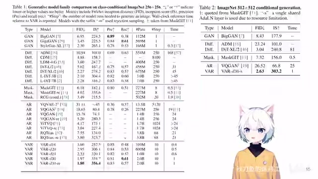
00:25:59–00:26:28 · 画面 027你发现本文的方法在 ImageNet 上是又快又好。当然你如果一定要说比较，它不是一个严格的比较，你的 DIT 它的 VAE 是直接从 stable diffusion 上拿过来的，你的 VAR 它的 VQVAE 是用 open images 来训练的。你说有额外的数据集作为外源吗？他们都有，但是它又不是一个好直接比较的东西，不能苛求说一个完全公平的比较。这里还有更高分辨率的结果。
00:26:28–00:26:55 · 画面 028
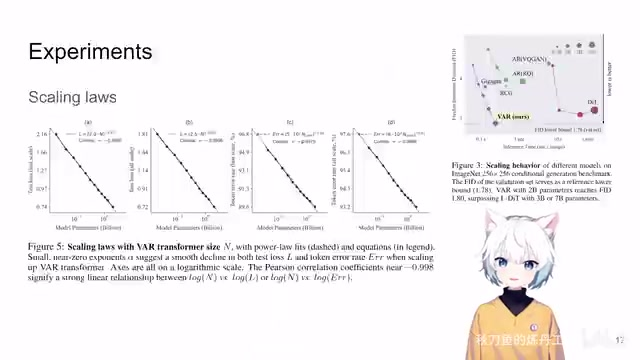
00:26:28–00:26:55 · 画面 028那么然后在这里作者有一个更加让人惊喜的观察，就是发现 scaling laws 就是我在不断的放大模型的过程中，它的表现是居然是符合我们预期的。你看到随着我们模型尺寸的增加，它的各种 loss 的变化，估计 token 错误的数量的变化都在不断的降低。很有意思，它的 scaling 这个过程是非常好的，很有意思的一个东西。那么当然后面作者也有随着你的训练的次数的增加，随着你网络随着你网络深度的增加，它的效果是怎么样的对吧？
00:26:55–00:27:07 · 画面 029
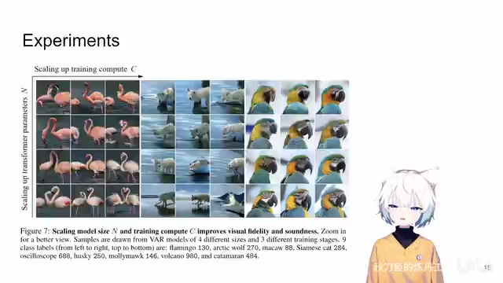
00:26:55–00:27:07 · 画面 029你可以一个很直接的对比这里还有 emulation 从 mask.jit 到本文的 var
00:27:07–00:27:20 · 画面 030
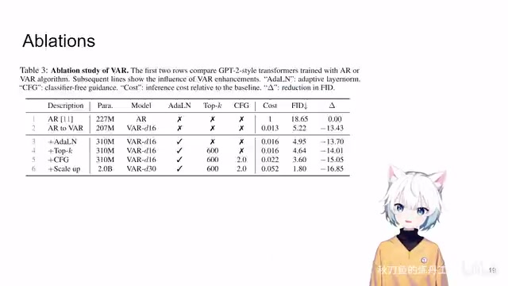
00:27:07–00:27:20 · 画面 030然后再加上各种改进。最后把这个模型整大一点。对吧那么它的效果是怎么样子的？很清楚的一个对比。作者最后还做了一些影片。
00:27:20–00:28:10 · 画面 031
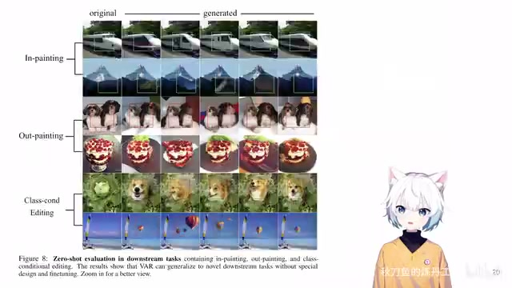
00:27:20–00:28:10 · 画面 031这些都是一些天头了。不过我怀疑他们选这组例子。肯定是有所指的好那么总的来说这篇文章很巧妙的。用一个 multi-scale 的方法来去表达一个图像的 latent。通过一次预测一整个 scale 的 latent。来实现了一个是推理速度上。再就是各个 token一个 scale 之间各个 token 的相关性为我们的 auto-regressive next token prediction这个系列来做了一个大的晚尊。
性能比 diffusion 还好是一个很有意思的设计。当然因为这个工作刚出来。文章中还是有很多的细节。需要更多的打磨它的 presentation特别是在 transformer twig这一段还需要更多的改善。但是在这个阶段你应该是能够理解。它在干什么你应该是能够可以去复现它的工作。好的那么感谢您的收看。请多多指点
00:28:10–00:28:11 · 画面 032
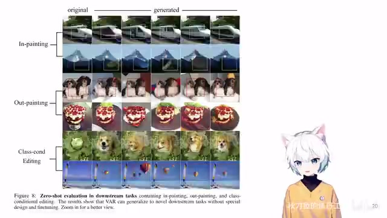
00:28:10–00:28:11 · 画面 032转写与来源说明 · 82 个自动复核提示
保留 230 个原始语音片段，82 个片段触发自动复核提示。提示仅用于定位可能的术语、重复或识别问题，不等于已确认错误。
讲解画面为源视频截图（640×360），不是可编辑 PPT 文件。全片按每秒 2 帧扫描内容变化，逐步展开页保留；连续动画保留代表画面。清晰度受源视频限制。
原视频：paper/合集_2026-10-16_内容生成/[论文简析]Visual Autoregressive Modeling ...via Next-Scale Prediction[2404.02905].mp4
SHA-256：c3e2cf6ea43fb7b66f9d15f2c87f5745316865e16a7dcba769060a5c87bac5ea
说我一次蹦一组，一次蹦一组。每一组 token 的数量逐渐增大。反映到你的 latent space，就是它也不再不断的变大，最终变到你想要的图的大小。这个是本文设计的核心的思想。相对于你在单格尺度上做 next token predation，它的优点是显而易见的。首先做了经过计算发现，这比你直接的去在一个层次上做 next token predation 相比，你要做的计算量
是少的。这个时候有朋友说了，这可能有点违反直觉。你说你 multi scale 要生成的 token 的总数肯定比单个 scale 要生成 token 的总数要多。但是这里有一个重要的点，就是你在做 autoregressive 这样一个生成的时候，它的 crossattention 它的代价是不断的增加的。你的 forward pass 你一个像素就要过一个 forward pass。但是在本文的 multi scale 的设计中，你一次是生成一个 scale 的 token
作者是使用了 multi-scale tokenization
虽然你也是用多个离散的 token。
去表示一个连续的 token。
但是随着你的这个 skill 的变化。
你有越来越多的 token
是共用一些连续的 token。
我们来结合它的算法来看。
我们首先既然是 vqvae
首先前面要有一个 encoder。
我们就直接拿到我们的 latent space。
就是这个 f
现在我们尝试去编码它。
首先来到第一个 skill
它的分辨率是最小的。
比如说就是 1 乘 1 一个 token。
这个时候我就把我的当前的。
要编码的东西
这个 F 给它缩放
缩放到 1 乘 1 的大小
就是一个 token
一个 token 你去做量化
查出它在字典里面的坐标。
然后记录一下字典的坐标。
把它的对应的 embedding 找出来。
这一个 embedding 是给整张图用的。
对吧
你再把它插值插回到整张图的大小。
这个时候你去做残插。
经过一个 transformer 的预测
得到的结果呢
再加回到原始的图像
就是我们最终生成的图像的结果
那你现在听起来
可能它有点抽象
我们先来看它这个推理的代码
比如说默认的情况下
我们把 layton 分成十步来生成
就是我要做十次 forward pass
来把这个 layton 生成出来
那每一个 scale
它的 resolution 你可以看到
从 1 到 2 乘 2 到 3 乘 3
一直到 16 乘 16
那最终 multi-scale
它所有的 token 的数量
它不是直接的在原图的这个 sequence 后面。
再加新的 token
而是经过这样一套缩放的方法来做。
那么拿到这个缩放过之后。
新的这个长的 token 之后。
我们记得再把 VQ 的这个 channel 的数量。
变成 transformer channel 的数量
但这里这个标记其实也不是特别准确。
我现在意识到
它应该是 transformer 的 embedding
对吧
但是你明白这个意思。
然后呢
再加上我们之前算好的 positional encoding。
一个新的序列就准备完成了。
各个 token 的相关性
为我们的 auto-regressive
next token prediction
这个系列
来做了一个大的晚尊。
性能比 diffusion 还好
是一个很有意思的设计。
当然因为这个工作刚出来。
文章中还是有很多的细节。
需要更多的打磨
它的 presentation
特别是在 transformer twig
这一段还需要更多的改善。
但是在这个阶段
你应该是能够理解。
它在干什么
你应该是能够
可以去复现它的工作。
好的
那么感谢您的收看。
全文按视频语音与画面制作。原论文可从上方链接下载；完整资料包保留全文、原始逐字稿、字幕和校对记录。